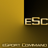
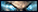
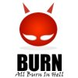
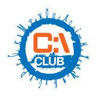
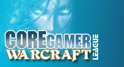

Это реконструированный сайт topw3.narod.ru | Харьков 2005-2007


 --vs--
--vs--
 RSG)Wolverine —[1:2]—esc.Fear
RSG)Wolverine —[1:2]—esc.Fear
RSG)Adoveov—[2:1]—esc.NiceRSG)Exe—[2:0]—esc.Reactor RSG)Xorek—[2:1]—esc.Fagot
RSG)Xorek—[2:1]—esc.Fagot --vs--RSG)Noobkiller <-
--vs--RSG)Noobkiller <-  nSt.SkadyRSG)Noobkiller <- nSt.SkadyRSG)Sky <- nSt.SkadyRSG)Fist <- nSt.Skady--vs--
nSt.SkadyRSG)Noobkiller <- nSt.SkadyRSG)Sky <- nSt.SkadyRSG)Fist <- nSt.Skady--vs--
RSG)Exe —[2:1]—MichaelBayRSG)Sky—[2:0]—4eIIyIIIuJIoRSG)Noobkiller—[2:0]—Togliatti_accExe+Fist)-[2:0]-BURN AT (DungA+MichaelBay)
